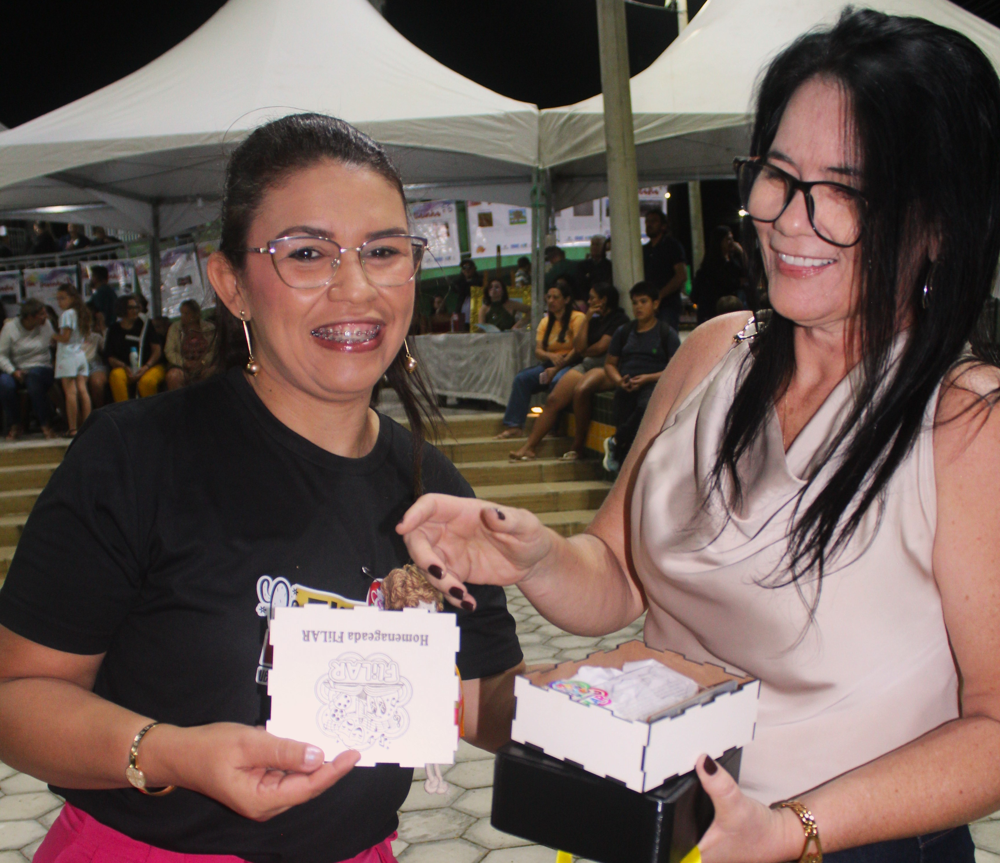
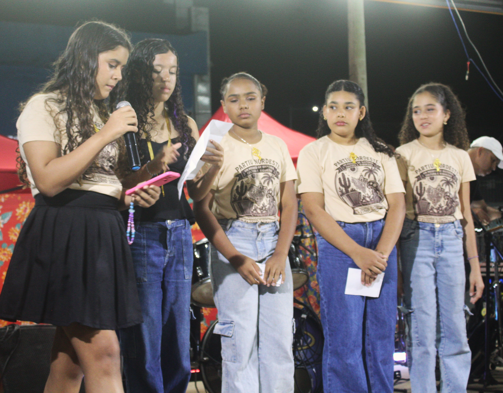

O Paraíba ponto Cultural entrevistou a escritora Mirtes Sulpino durante a noite de atividades da quarta edição da FLILAR — Festa Literária de Lagoa de Roça. Homenageada pelo evento em 2026, ela falou sobre o reconhecimento de seu trabalho, a participação dos estudantes, a importância das festas literárias para a formação de leitores e as dificuldades enfrentadas por quem organiza iniciativas culturais.
Carlos Alberto — Mirtes, você é fundadora da mais antiga feira literária do estado da Paraíba e ativista cultural, sempre atuante no meio da literatura. Como recebeu esta homenagem?
Mirtes Sulpino — Eu recebi com muita alegria o convite da organização da FLILAR para estar nesta edição como escritora homenageada. A gente reconhece que hoje as feiras e festas literárias buscam trazer os escritores paraibanos para o debate, para a sala de aula. E trabalhar, em especial, os meus textos nas escolas, eu vejo como um reconhecimento do meu trabalho, um trabalho que já tem quase duas décadas em torno do livro e da leitura. E hoje, com foco maior na literatura infantil, eu recebo com muita gratidão essa homenagem, porque é muito gratificante a gente ver a dedicação dos professores, o empenho dos alunos em participarem, em trazer, como hoje nós estamos aqui no espaço aberto, que é a praça pública. Os alunos se apresentam e dão vida, de certa forma, aos meus personagens e à minha literatura.

Carlos Alberto — Aproveitando essa sua fala, como você vê a participação dos alunos? Além da questão do seu trabalho, de que maneira a presença dessas feiras literárias atua?
Mirtes Sulpino — Primeiro, eu vejo muito como política pública de incentivo à leitura, formação de leitores, e esses espaços são espaços democráticos. De certa forma, o livro sai um pouco da sala de aula, ele sai da estante, ele vem para a praça, ele vem para o diálogo. E é uma ressalva que eu faço, até com muito respeito ao trabalho dos professores: a gente tem um festival que acontece durante quatro dias, mas existe toda uma preparação que é feita o ano inteiro, quando os professores trabalham as nossas obras literárias com seus estudantes em sala de aula, com essa vivência com os escritores da Paraíba, e a gente tem a oportunidade de ser, de fato, reconhecido como escritor.
Mirtes Sulpino — Então, as feiras, as festas literárias, elas cumprem esse papel na formação do leitor. E hoje, em especial aqui em Lagoa de Roça, nós tivemos o depoimento de uma mãe que começou a participar de um clube de leitura para incentivar os filhos a lerem. E ela disse que foi a coisa mais certa que ela já fez para os filhos, que é uma forma também de educá-los, de incentivá-los e de fazer com que, através da leitura, através do conhecimento, eles consigam futuramente alçar voos mais altos.
Mirtes Sulpino — E os alunos, quando chegam à praça, têm uma desenvoltura muito grande. Então, eles leem os textos, eles recitam, eles pegam a nossa obra e transformam em um musical, transformam em uma peça de teatro. E a gente vê o quanto é rico o repertório dos professores, porque, quando a gente escreve, a gente nem imagina onde o nosso texto vai chegar. A gente nem imagina de que forma o professor pode trabalhar o nosso texto em sala de aula. E, quando a gente chega nessas festas, a gente se surpreende com a riqueza que encontra e com a força que a literatura tem em envolver não apenas as escolas, mas toda a comunidade.

Carlos Alberto — É muito bonito esse depoimento da mãe que você trouxe para que a gente registre. Mas, claro, nem tudo são flores. Quais são as maiores dificuldades que você observa para a realização de um evento como este, aqui em Lagoa de Roça, e também em outros municípios, como Boqueirão, onde você promove uma feira literária?
Mirtes Sulpino — A maior dificuldade que a gente encontra, e eu me coloco também nessa posição de organizadora de festival literário, é justamente o apoio com recurso financeiro, seja do poder público, seja da iniciativa privada. Então, é um trabalho que muitas vezes a gente idealiza, a gente planeja, e, quando nós vamos executar, a gente começa a se deparar com alguns obstáculos.
Mirtes Sulpino — É falta de recurso, até porque, para se manter um evento desse porte, é muito caro: é infraestrutura, seja som, seja palco, sejam cadeiras, sejam as atrações que você convida para participar. Então, tem toda uma logística. O evento, para o público, é gratuito, mas ele tem um custo para ser realizado. Eu diria que a maior dificuldade é a gente sensibilizar os órgãos públicos para captar o recurso, para que o evento, de fato, aconteça.
Carlos Alberto — Mirtes, mais uma vez, obrigado. Você está sempre disponível para o Paraíba ponto Cultural, e a gente deve se encontrar na FLIBO.
Mirtes Sulpino — Se Deus quiser, espero.